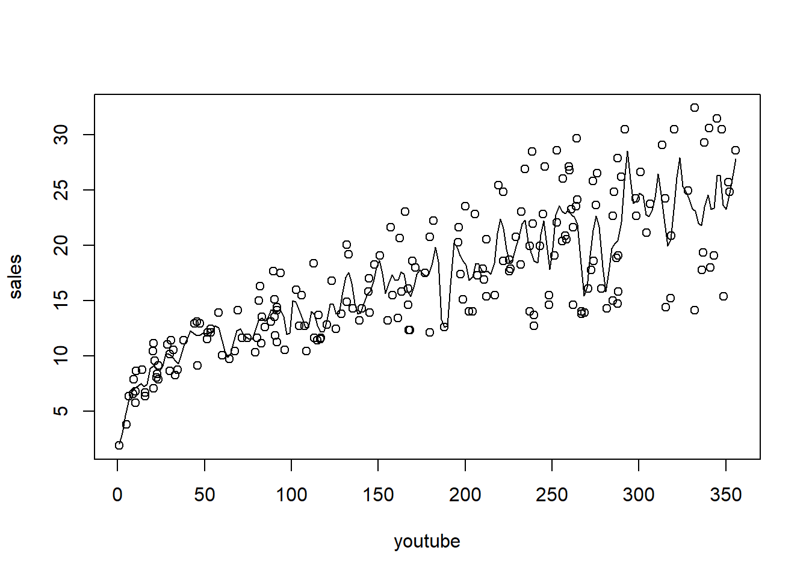

Warning: package 'faraway' was built under R version 4.3.3Code
library(sm)Warning: package 'sm' was built under R version 4.3.3Code
library(mgcv)Welcome to the world of GAMs and nonparametric regression.
A parametric statistical model is a family of probability distributions with a finite set of parameters.
Example: The Normal Regression Model: \(Y \sim N(X\beta, \sigma^2I_n)\)
A parametric statistical model where the shape of predictors is determined by a function on a theoretical distribution (i.e. logarithmic, sigmoid, etc.)
A nonparametric function means that the shape of the predictor functions is determined by the data.
Suppose we have two individual predictors:
If we add these:
Can be described as:
We learn \(f\) by assuming it comes from some smooth family of functions. In this case, the set of potential fits to the data is much larger than the parametric approach (i.e. linear line + quadratic + cubic). We can use kernel estimators for these types of data.
Additive Function
\[\hat{f_{\lambda}}(x) = \frac{\frac{1}{n\lambda}\sum\limits_{i=1}^n K(\frac{x-x_i}{\lambda})Y_i}{\sum\limits_{i=1}^n K(\frac{x-x_i}{\lambda})}\]
Common Kernel Estimators
Given the model \(Y_i = f(x_i) + \epsilon_i\), we can choose \(\hat{f}\) by minimizing:
Smoothing Splines
Regression Splines
Main Differences
Smoothing splines are more flexible due to the roughness penalty, while regression splines provide a simpler model with fewer knots and no penalty term. Should be chosen specific for each analysis.
Libraries
Warning: package 'faraway' was built under R version 4.3.3library(sm)Warning: package 'sm' was built under R version 4.3.3library(mgcv)Kernel Specific Data
youtube facebook newspaper sales
1 276.12 45.36 83.04 26.52
2 53.40 47.16 54.12 12.48
3 20.64 55.08 83.16 11.16
4 181.80 49.56 70.20 22.20
5 216.96 12.96 70.08 15.48
6 10.44 58.68 90.00 8.64Plot sales (response) against youtube (predictor), and then fit and overlay a kernel regression

A function to calculate MSPE from a given parameter (bandwidth). Note that ordering the data is required.
optimize_kernel <- function(train_set, test_set, response, predictor, bandwidth) {
test_data <- test_set %>% select(!!sym(predictor), !!sym(response))
test_data <- test_data %>% arrange(!!sym(predictor))
obs <- test_data[[response]]
preds <- ksmooth(x = train_set[[predictor]],
y = train_set[[response]],
'normal',
bandwidth,
x.points = test_set[[predictor]])$y
mspe <- mean((obs - preds)^2)
return(mspe)
}Create a sine wave dataset
Plot some different kernel smoothing parameters

Use the 0.3 parameter to make some predictions
ksmooth(x, y, "normal", 0.3, x.points = 0.5)$x
[1] 0.5
$y
[1] 1.062831ksmooth with a Custom Function# custom function
custom_smooth = function(x,y,lambda){
f = matrix(NA, ncol = 1, nrow = length(x))
for (i in 1:length(x)){
f[i] = sum(dnorm((x-x[i])/lambda)*y)/sum(dnorm((x-x[i])/lambda))
}
s = data.frame(x[order(x)],f[order(x)])
return(s)
}
# plotting with custom function
plot(y ~ x, main = expression(f(x) == sin(pi*x)), pch = 16, cex=0.8, col = alpha("darkgrey", 0.9))
s1 = custom_smooth(x, y, 0.1);
s2 = custom_smooth(x,y, 0.2)
lines(s1$x,s1$f, type = "l", col = "blue")
lines(s2$x,s2$f, type = "l", col = "orange")Use smooth.spline where spar is the smoothing parameter.
plot(y ~ x, main = expression(f(x) == sin(pi*x)), pch = 16, col = alpha("grey", 0.8))
lines(smooth.spline(x, y, spar = 0.5))plot(y ~ x, main = expression(f(x) == sin(pi*x)), pch = 16, col = alpha("grey", 0.8))
lines(smooth.spline(x, y, spar = 1))Use geom_smooth
n = 50; x = runif(n, 0 , pi/2); y = sin(pi*x) + rnorm(n, 0, 2)
df = data.frame(x = x, y = y)
ggplot(df)+
geom_point(aes(x = x, y = y)) +
geom_smooth(aes(x = x, y = y)) +
theme_bw()`geom_smooth()` using method = 'loess' and formula = 'y ~ x' sr pop15 pop75 dpi ddpi
Australia 11.43 29.35 2.87 2329.68 2.87
Austria 12.07 23.32 4.41 1507.99 3.93
Belgium 13.17 23.80 4.43 2108.47 3.82
Bolivia 5.75 41.89 1.67 189.13 0.22
Brazil 12.88 42.19 0.83 728.47 4.56
Canada 8.79 31.72 2.85 2982.88 2.43sm package is for “Smoothing Methods for Nonparametric Regression and Density Estimation”
# The savings rate will be our response variable
y = savings$sr
# pop15 and ddpi will be our two predictor variables
x = cbind(savings$pop15, savings$ddpi)
#sm.regression - usage: sm.regression(x, y, h, design.mat = NA, model = "none", weights = NA,
#group = NA, ...)
sm.regression(x,y,h=c(1,1),xlab="pop15",ylab="growth",zlab="savings rate")sm.regression(x,y,h=c(5,5),xlab="pop15",ylab="growth",zlab="savings rate")Produce a spline surface with the
gam()Function
loessfunction
data(exp)Warning in data(exp): data set 'exp' not foundhead(exa) x y m
1 0.0048 -0.0339 0
2 0.0086 0.1654 0
3 0.0117 0.0245 0
4 0.0170 0.1784 0
5 0.0261 -0.3466 0
6 0.0299 -0.7550 0plot(y ~ x, data = exa, main = "f(x) = sin^3(2pi x^2)")First, attempt a fit with kernel estimators of the unknown function \(Y = f(x)\).
Use a smoothing spline and a regression spline
# default is spar=NULL
plot(y ~ x, data = exb, main = "f(x) = 0")
lines(smooth.spline(exb$x, exb$y))plot(y ~ x, data = exb, main = "f(x) = 0")
lines(smooth.spline(exb$x, exb$y, spar = 1)) x1 x2 x3
1 22.79149 t FALSE
2 68.65754 s TRUE
3 30.64883 s FALSE
4 31.19992 s TRUE
5 15.03537 t FALSE
6 40.91556 s FALSEFor this example, we make the response some nonlinear/nonparametric function of x1. In a realworld situation, we wouldn’t know this relationship and would estimate it. Other terms are modeled parametrically. The resposne has normal noise. The model we want is a Poisson GAM, with true relationship \(log(\mu_i) = \beta_1 + log(0.5x_i^2) - x_2 + x_3\)
# make predictor
d$mu <- with(d, exp(log(0.5*x1^2)) - as.integer(as.factor(x2)) + as.integer(as.factor(x3)))
d$y <- rpois(n, d$mu) # manufacturing a poisson responsemod_gam <- gam(y ~ s(x1) + as.integer(as.factor(x2)) + as.integer(as.factor(x3)), data=d, family=poisson)
mod_gam
Family: poisson
Link function: log
Formula:
y ~ s(x1) + as.integer(as.factor(x2)) + as.integer(as.factor(x3))
Estimated degrees of freedom:
8.64 total = 11.64
UBRE score: -0.1023909 summary(mod_gam)
Family: poisson
Link function: log
Formula:
y ~ s(x1) + as.integer(as.factor(x2)) + as.integer(as.factor(x3))
Parametric coefficients:
Estimate Std. Error z value Pr(>|z|)
(Intercept) 6.798166 0.012954 524.799 <2e-16 ***
as.integer(as.factor(x2)) 0.001226 0.004055 0.302 0.762
as.integer(as.factor(x3)) 0.003369 0.006704 0.503 0.615
---
Signif. codes: 0 '***' 0.001 '**' 0.01 '*' 0.05 '.' 0.1 ' ' 1
Approximate significance of smooth terms:
edf Ref.df Chi.sq p-value
s(x1) 8.643 8.958 28056 <2e-16 ***
---
Signif. codes: 0 '***' 0.001 '**' 0.01 '*' 0.05 '.' 0.1 ' ' 1
R-sq.(adj) = 0.998 Deviance explained = 99.8%
UBRE = -0.10239 Scale est. = 1 n = 100plot(mod_gam)gam.check(mod_gam)
Method: UBRE Optimizer: outer newton
full convergence after 8 iterations.
Gradient range [4.56651e-09,4.56651e-09]
(score -0.1023909 & scale 1).
Hessian positive definite, eigenvalue range [0.004773368,0.004773368].
Model rank = 12 / 12
Basis dimension (k) checking results. Low p-value (k-index<1) may
indicate that k is too low, especially if edf is close to k'.
k' edf k-index p-value
s(x1) 9.00 8.64 1.02 0.51 brozek siri density age weight height adipos free neck chest abdom hip
1 12.6 12.3 1.0708 23 154.25 67.75 23.7 134.9 36.2 93.1 85.2 94.5
2 6.9 6.1 1.0853 22 173.25 72.25 23.4 161.3 38.5 93.6 83.0 98.7
3 24.6 25.3 1.0414 22 154.00 66.25 24.7 116.0 34.0 95.8 87.9 99.2
4 10.9 10.4 1.0751 26 184.75 72.25 24.9 164.7 37.4 101.8 86.4 101.2
5 27.8 28.7 1.0340 24 184.25 71.25 25.6 133.1 34.4 97.3 100.0 101.9
6 20.6 20.9 1.0502 24 210.25 74.75 26.5 167.0 39.0 104.5 94.4 107.8
thigh knee ankle biceps forearm wrist
1 59.0 37.3 21.9 32.0 27.4 17.1
2 58.7 37.3 23.4 30.5 28.9 18.2
3 59.6 38.9 24.0 28.8 25.2 16.6
4 60.1 37.3 22.8 32.4 29.4 18.2
5 63.2 42.2 24.0 32.2 27.7 17.7
6 66.0 42.0 25.6 35.7 30.6 18.8# want to determining if we should use the smoothing function on each of the features
gam_mod <- gam(siri ~ s(weight) + s(height) + s(chest) + s(neck) + s(abdom) + s(hip) + s(thigh) + s(knee) + s(ankle) + s(biceps) + s(forearm) + s(wrist), data=fat)
# res vs predicted
res <- residuals(gam_mod, type='deviance')
plot(log(predict(gam_mod, type='response')), res)
abline(h=0)# qqplot
qqnorm(res)# missed a plot - SEE LECTURE VERSION
# maybe
plot.gam(gam_mod)

O3 vh wind humidity temp ibh dpg ibt vis doy
1 3 5710 4 28 40 2693 -25 87 250 33
2 5 5700 3 37 45 590 -24 128 100 34
3 5 5760 3 51 54 1450 25 139 60 35
4 6 5720 4 69 35 1568 15 121 60 36
5 4 5790 6 19 45 2631 -33 123 100 37
6 4 5790 3 25 55 554 -28 182 250 38
Family: gaussian
Link function: identity
Formula:
O3 ~ s(temp) + s(ibh) + s(ibt)
Parametric coefficients:
Estimate Std. Error t value Pr(>|t|)
(Intercept) 11.7758 0.2382 49.44 <2e-16 ***
---
Signif. codes: 0 '***' 0.001 '**' 0.01 '*' 0.05 '.' 0.1 ' ' 1
Approximate significance of smooth terms:
edf Ref.df F p-value
s(temp) 3.386 4.259 20.681 < 2e-16 ***
s(ibh) 4.174 5.076 7.338 1.74e-06 ***
s(ibt) 2.112 2.731 1.400 0.214
---
Signif. codes: 0 '***' 0.001 '**' 0.01 '*' 0.05 '.' 0.1 ' ' 1
R-sq.(adj) = 0.708 Deviance explained = 71.7%
GCV = 19.346 Scale est. = 18.72 n = 330Note: IBT has evidence that it could be linear, while others do not. What we want to see here is a linear line through the confidence bounds.